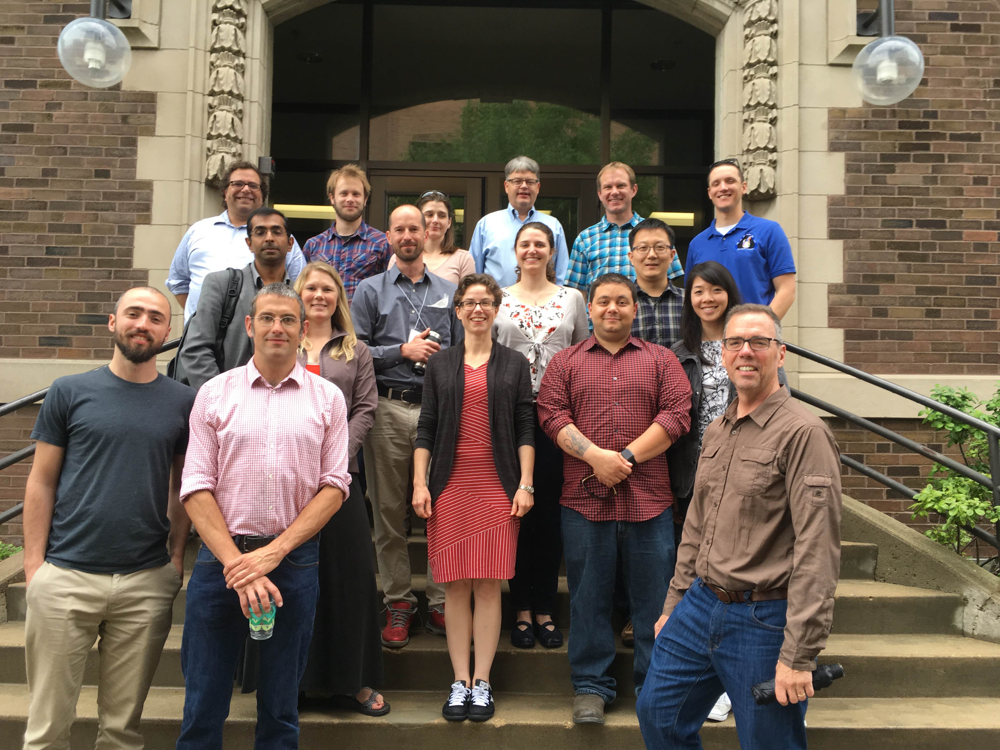

Spring Imagery Workshop 2016
Minneapolis, June 2016, by invitation only

Workshop attendees,from left: Bento Goncalves, Mike Willis, Shantenu Jha, Ben Smith, Michelle LaRue, Cole Kelleher, Ben Crosby, Claire Porter, Heather Lynch, Paul Morin, Elizabeth Hoy, Sal Candela, Jonathan Pundsack, Kang Yang, Vena Chu, Peter Griffith, Mark Salvatore.
Not pictured: Ian Howat, Jim Ferguson, Bill Kramer.
Hosted by the Polar Geospatial Centre, 6-8 senior PIs, accompanied by early career researchers, will gather for a two day workshop on the integration of high-performance distributed computing (HPDC) and satellite imagery. Following separate threads on Day1, senior researchers will assess the long-term needs of the imagery community as regards, compute, networking, and storage, while the early-career researchers receive training in the basic elements of utilizing HPDC resources. On Day2, the gathering will jointly draft a proposal on how to achieve the goals discussed on Day 1.
Dates: June 2-3